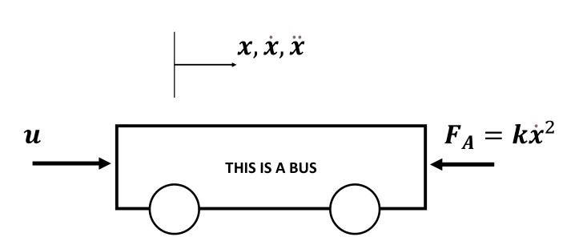
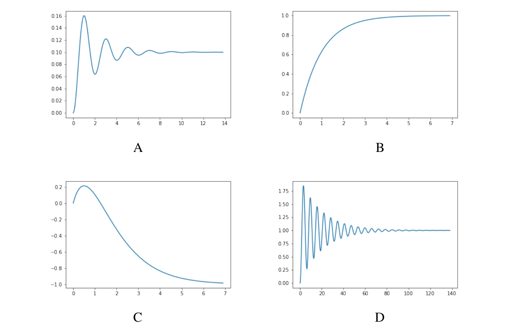
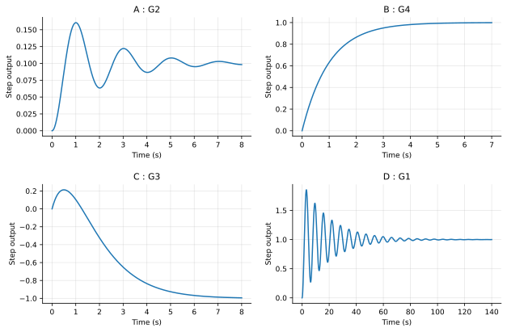
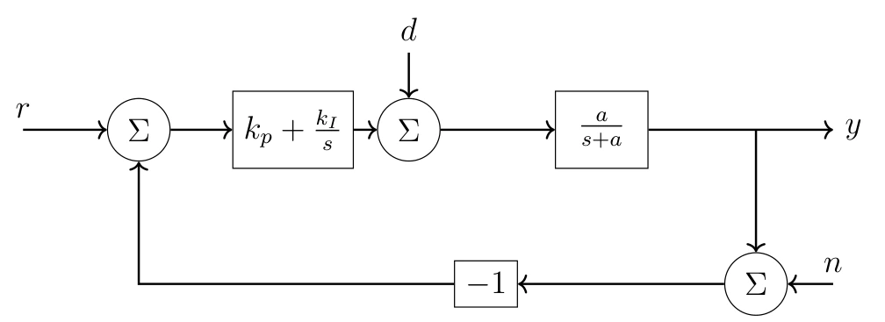
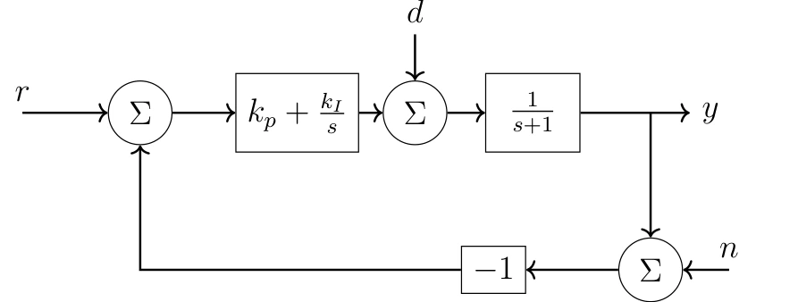
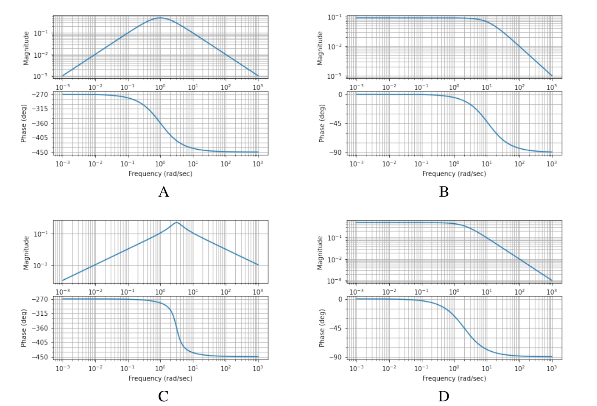
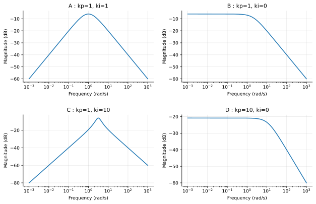
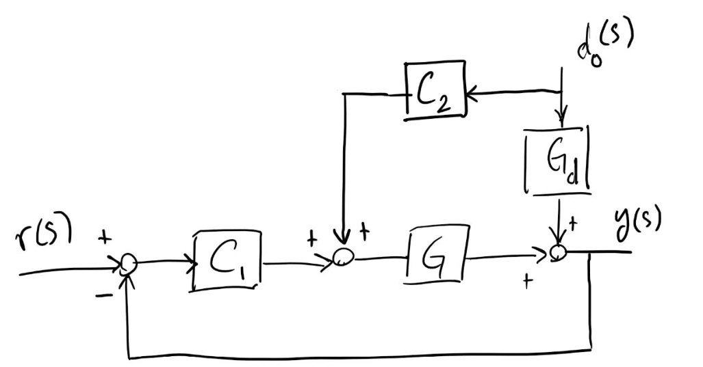

Questions below reproduce the wording from the supplied exam (including the original phrasing); line wraps and mathematical notation have been typeset for HTML. Diagrams and plots are from the supplied PDF. Worked explanations are separate from the question boxes.
Problem 1 — Longitudinal bus model: Newton's law to transfer function
Problem 1 (8 points)

Consider the bus shown in the figure above. The bus has mass \(m\) and experiences forces from the engine \(u\) and from aerodynamic drag \(F_A=k\dot x^2\).
- Use Newton’s second law and derive the equations of motion.
- Define \(\dot x=v\) and find the equilibrium input, \(u_0\) such that the speed is maintained at \(v_0\).
- Linearize the equations of motion at the equilibrium point \((v_0,u_0)\).
- Derive the transfer function from input \(u\) to output \(v\).
Determine force direction and equilibrium first; use small-signal perturbations and Laplace only after linearizing.
Worked solution — answered by question part
Part (a) — Equation of motion
The bus has mass \(m\), applied engine force \(u\), and aerodynamic drag \(F_A=k\dot x^2\). Assume forward motion \(v=\dot x\ge0\), level ground, and no additional rolling resistance. Newton's second law along the travel axis gives
Part (b) — Equilibrium force at constant speed
Defining speed \(v=\dot x\) produces the first-order nonlinear state equation
A constant-speed equilibrium has \(\dot v=0\) when \(v=v_0\). Therefore the constant input needed to balance drag is
Part (c) — Linearize about the equilibrium
To linearize, let \(v=v_0+\delta v\) and \(u=u_0+\delta u\) and expand the square:
The equilibrium terms cancel since \(u_0=kv_0^2\). For small departures neglect \((\delta v)^2\), yielding
Part (d) — Transfer function from engine force to speed
Take the Laplace transform under zero initial perturbation:
The pole is \(-2kv_0/m\), and the local time constant is \(m/(2kv_0)\) for \(v_0>0\). The local DC gain \(1/(2kv_0)\) gives incremental speed change per incremental force. Why the transfer function is incremental: the system's actual input/output contain nonzero offsets \((u_0,v_0)\); a transfer function derived from linearization relates \(\delta u\) to \(\delta v\), not the full nonlinear variables.
At \(v_0=0\), the Jacobian drag term vanishes and the small-signal model becomes an integrator \(1/(ms)\); this special case must not be assigned the positive-speed time constant. For reverse motion, physical drag should be written \(kv|v|\) with opposing sign, and linearized consistently.
Self-check: Does the linear model depend on operating speed v0?
Problem 2 — Match four transfer functions to four step-response plots
Problem 2 (8 points)
Consider the following transfer functions:
Match the transfer functions to their step-response shown in the next page. Explain your reasoning. Note, to get full credit, you must justify each transfer function to step response pair. Using a "process of elimination" is not sufficient justification. Justification should be in terms of poles, zeros, damping ratios, etc., quantities that we know determine the step response of a transfer function.
Transfer function Step response plots
| Transfer function | Step response plots |
|---|---|
| 1 | |
| 2 | |
| 3 | |
| 4 |
Explain your reasoning here:

Compute each DC gain, pole pair, damping ratio and zero sign; match characteristic features, not merely remaining plots.
Worked solution and reasoning
The given functions are
Match: \(\boxed{G_1\to D,\quad G_2\to A,\quad G_3\to C,\quad G_4\to B.}\) Each pair has an independent physical/mathematical justification:
- \(G_1\to D\): \(\omega_n=1,\ 2\zeta\omega_n=0.1\Rightarrow\zeta=0.05\). Its poles \(-0.05\pm j0.9987\) are very lightly damped, giving a long-lived oscillation with final value \(G_1(0)=1\). Plot D has exactly this combination and a long time axis.
- \(G_2\to A\): \(\omega_n=\sqrt{10}\approx3.162\), \(\zeta=1/(2\sqrt{10})\approx0.158\). Its much faster oscillations decay more rapidly than \(G_1\); its final value is \(G_2(0)=1/10=0.1\). Plot A oscillates around 0.1, not around 1.
- \(G_3\to C\): poles at \(-1\) are stable, but the numerator zero is at \(+1\), in the right half-plane. Its DC gain is \(G_3(0)=-1\), so a positive step eventually produces a negative final response. The nonminimum-phase zero can create an initial movement opposite the final direction; plot C rises briefly and then decays toward \(-1\).
- \(G_4\to B\): after exact pole-zero cancellation, \(G_4=1/(s+1)\). This is a first-order, monotone, non-overshooting response to final value 1 with time constant 1 s, precisely the shape of B.
This is a stronger answer than elimination because it predicts time scales, final gains, overshoot and inverse response for each transfer function.

Self-check: Does the predicted steady-state value match each plotted response?
Problem 3 — PI controller: stability and transient specifications
Problem 3 (10 points)

Consider the control system shown in the block-diagram above. Assume \(a>0\).
- Determine conditions for \(k_p\) and \(k_I\) so that the system is stable.
- Find values for \(k_I\) and \(k_p\) such that the closed loop system from \(r\) to \(y\) has a rise time less than \(T_r\) and a settling time less than \(T_s\) for a step.
Write the PI characteristic polynomial and its Hurwitz constraints; translate rise/settling specifications to ζ and ωn.
Worked solution — answered by question part
Part (a) — Conditions on the PI gains for stability
The diagram has \(C(s)=k_p+k_I/s\) and plant \(G(s)=a/(s+a)\) with \(a>0\). Input disturbance and sensor noise enter other branches, but the reference-to-output characteristic equation uses the loop \(L=CG\):
For a second-order polynomial \(s^2+b s+c\), asymptotic stability is equivalent to \(b>0\) and \(c>0\). Thus
Answer (a): The closed-loop system is asymptotically stable precisely when \(k_p>-1\) and \(k_I>0\), for the specified \(a>0\).
Part (b) — Choose PI gains from rise- and settling-time requirements
The desired reference-to-output function is
Match the denominator with \(s^2+2\zeta\omega_ns+\omega_n^2\):
If we choose an underdamped design with \(\zeta\approx0.7\), the usual approximations \(t_r\approx1.8/\omega_n\) and \(t_s(2\%)\approx4/(\zeta\omega_n)\) suggest
Important subtlety: \(T(s)\) has a numerator zero at \(s=-k_I/k_p\) for \(k_p\ne0\). Therefore the textbook second-order rise/settling formulas are only design estimates, not exact guarantees; verify the actual step response for the chosen gains and adjust as needed. If no particular numerical \(a,T_r,T_s\) are specified, the symbolic family above is the complete meaningful answer.
Answer (b): Select a target damping ratio (for example \(\zeta\approx0.7\)) and a sufficiently large \(\omega_n\), then use the boxed formulas above. Finally check the actual step response, because the closed-loop numerator introduces a zero.
Self-check: Do all closed-loop polynomial coefficients give valid stability?
Problem 4 — Match controller values to disturbance Bode plots
Problem 4 (10 points)

Consider the control system shown in the block-diagram above. Consider the transfer function from disturbance \(d\) to the output \(y\). Match the Bode plots in the next page to the values of \(k_p\) and \(k_I\) shown the table. Explain your reasoning. Note, to get full credit, you must justify each selection. Using a "process of elimination" is not sufficient justification. Justification should be in terms of poles, zeros, damping ratios, etc., quantities that we know determine the frequency response of a transfer function.
| \(k_p\) | \(k_I\) | Bode plots |
|---|---|---|
| 1 | 0 | |
| 10 | 0 | |
| 1 | 1 | |
| 1 | 10 |
Explain your reasoning here:

Derive the transfer from d to y; use DC attenuation, corner locations and phase to justify each plot match.
Worked solution and reasoning
For \(G(s)=1/(s+1)\) and \(C(s)=k_p+k_I/s\), an input disturbance \(d\) added before the plant gives
When \(k_I=0\), the disturbance path is first-order and has nonzero DC gain \(1/(1+k_p)\). Thus \(k_p=1,k_I=0\to B\) (DC magnitude 0.5) and \(k_p=10,k_I=0\to D\) (DC magnitude \(1/11\approx0.091\)). The plotted phase approaches \(-90^\circ\) in both cases.
When \(k_I>0\), the path has a zero at the origin: low-frequency magnitude starts at zero and rises at \(+20\) dB/decade. With \(k_p=1,k_I=1\), the denominator is \((s+1)^2\) with no sharp resonance; this is plot A. With \(k_p=1,k_I=10\), the denominator is \(s^2+2s+10\) with natural frequency \(\sqrt{10}\) and damping \(\zeta=1/\sqrt{10}\approx0.316\), producing the resonant peak at higher frequency seen in plot C.
Therefore the table is \(\boxed{(1,0)\to B,\ (10,0)\to D,\ (1,1)\to A,\ (1,10)\to C.}\) Again, the justification uses the DC asymptote, order, zero at the origin, resonant frequency and high-frequency slope, not elimination.

Self-check: Do phase and low-frequency gain distinguish the Bode curves?
Problem 5 — Disturbance feedforward plus feedback
Problem 5 (10 points)

The block diagram above shows a feedforward of the disturbance. Consider the disturbance, \(d_o\) to be a gust and \(G\) to be the elevator to pitch rate transfer function. In this example, we are assuming that we have some ability to measure the gust disturbance, \(d_0\). This is possible in some circumstances.
- Derive the transfer function from gust disturbance, \(d_0\), to pitch rate, \(y\).
- Choose the feedforward controller \(C_2\) such that the gust has zero effect on the pitch rate.
- Suppose we cannot perfectly remove the effects of the gust with the feedforward controller \(C_2\). What else can we do to minimize the effect of the gust disturbance on the measured pitch rate?
Identify where feedforward is injected and where the gust enters. Factor the common feedback denominator.
Worked solution — answered by question part
Part (a) — Derive the gust-disturbance transfer function
The drawing measures the gust disturbance \(d_0\), sends it through the disturbance path \(G_d\), and also sends it through a feedforward controller \(C_2\) into the plant input. The feedback controller is \(C_1\) and the plant is \(G\). With \(r=0\),
Substitute \(u\) and collect the \(y\) terms:
Part (b) — Find a feedforward cancellation controller
Perfect cancellation of a measured disturbance in the ideal model requires the numerator to vanish:
This is feasible only if the required feedforward transfer function is causal, proper and stable (and the disturbance is measured in time). Inverting \(G\) can demand unstable pole cancellation when \(G\) has RHP zeros, or demand differentiation when \(G\) has higher relative degree than \(G_d\). Physical sensor latency also prevents perfect cancellation of a fast gust.
Part (c) — Reduce residual gust response when cancellation is imperfect
If feedforward is imperfect, increase stable loop gain at gust frequencies so \(|S|=1/|1+GC_1|\) falls, use a better gust sensor/estimator, or redesign the feedforward model. Check noise, actuator authority, phase margin, and robustness: high gain is not universally better.
Self-check: Does setting C2=-Gd/G cancel the numerator?